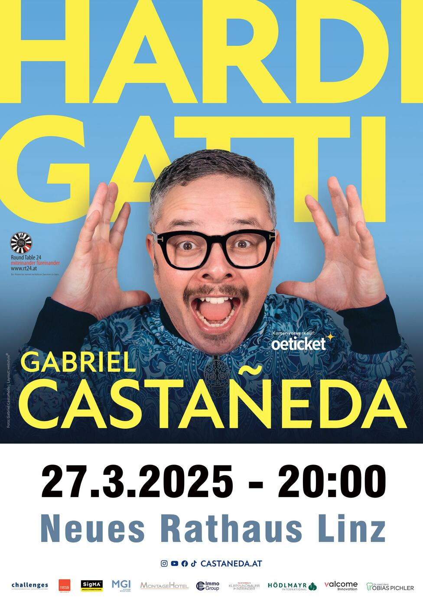
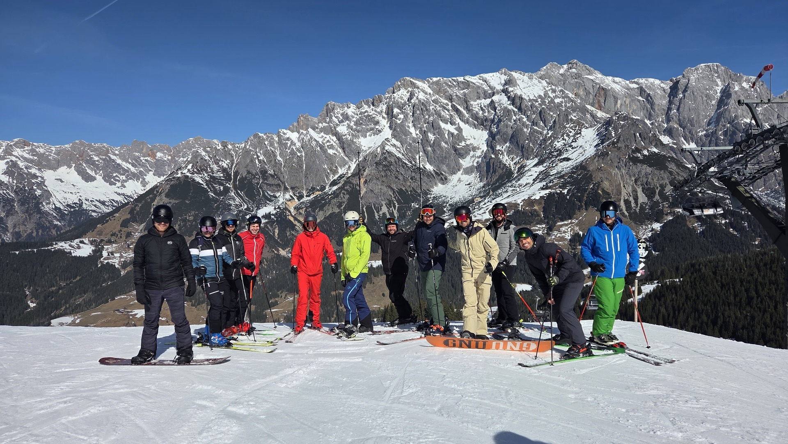
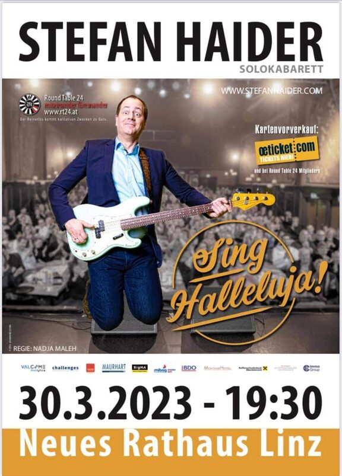
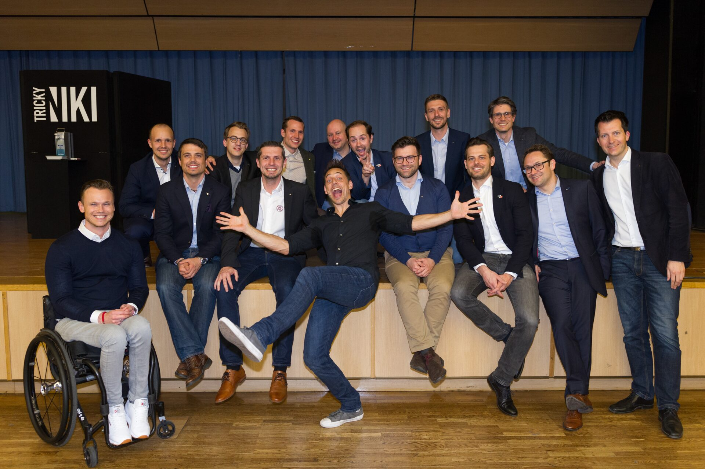
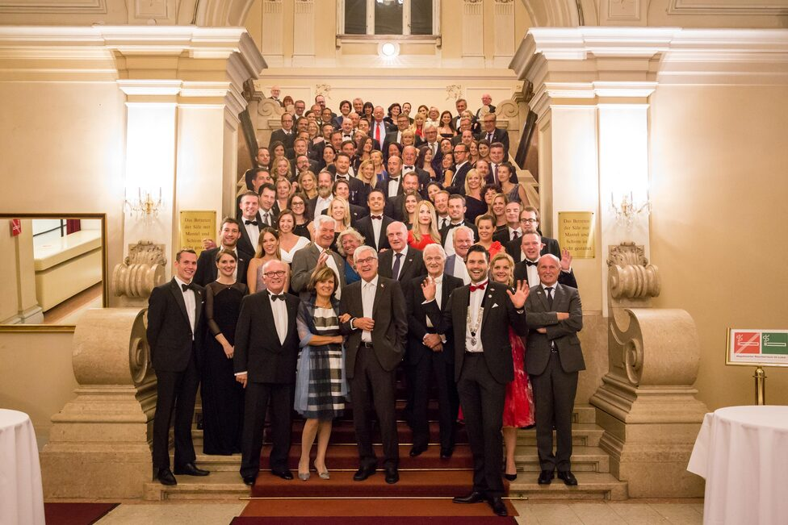
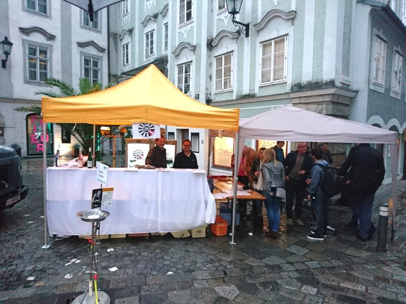
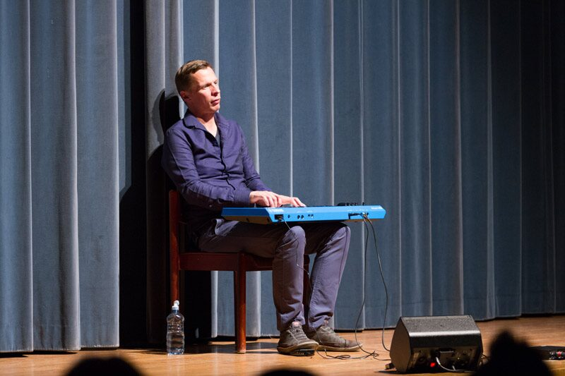
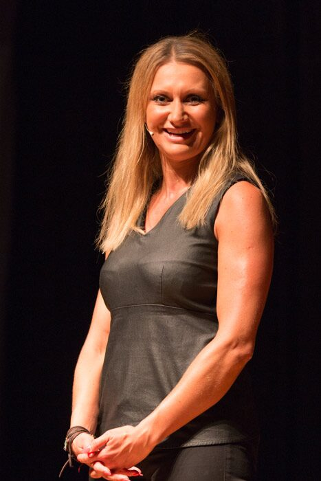

Veranstaltungen
Gemeinsam lachen, gemeinsam feiern – und dabei Gutes tun: Der Reinerlös unserer Events fließt in karitative Projekte.
Hosea Ratschiller – „HAPPY PLACE“
Eine der markantesten Stimmen des österreichischen Kabaretts, bekannt aus den ORF-„Pratersternen“ und von FM4, gastiert für den guten Zweck in Linz: Stand-up mit sprachlicher Präzision, feinen Zwischentönen und einer ordentlichen Portion Selbstironie.
Der Reinerlös des Abends unterstützt Familien und Kinder in Not in Oberösterreich – direkt, persönlich und wirksam. Presented by Tips & Life Radio.

Events, an die wir gern zurückdenken
Gabriel Castañeda – „Hardi Gatti“
Der Austromexikaner meldet sich mit neuem Programm zurück: eine bitterböse Mischung aus Witz und Satire, gewürzt mit verhaltensoriginellen Alter Egos – Pointen, treffsicher wie Lucky Luke.

Skitag „From Alps to Amore“
Früh morgens ging es per Kleinbus nach Mühlbach am Hochkönig: überraschend gute Pisten, Mittagstisch auf der Steinbockalm mit Livemusik und Sonnenschein – und zum Abschluss ausgelassene Stimmung auf der Hütte, bevor es gemeinsam zurück nach Linz ging. Danke an Christoph für die perfekte Organisation!

Stermann & Grissemann – „Gags, Gags, Gags!“
Eine kabarettistische Gala mit dem bekannten Satiriker-Duo: ein Abend voller bissiger Pointen und bester Unterhaltung – der gesamte Gewinn ging an karitative Einrichtungen.

Stefan Haider – „Sing Halleluja!“
Der Kabarettist und Religionslehrer nahm die Welt nach Corona mit viel Humor unter die Lupe – und stellte sich den drängenden (und den herrlich unnötigen) Fragen der Zeit.

Wein und Kunst
Endlich wieder Weinfest in der Linzer Altstadt! Am RT24-Stand floss der bewährte Bründlmayer-Wein, die Stimmung war prächtig – und am Ende stand erneut ein satter Reinerlös für unsere Charityprojekte.

Skitag Flachau
Sieben Ski- und Après-Ski-Cracks, Frühlingsfirn, ein langes Mittagessen auf der Auhofalm und eine „herausfordernde“ letzte Abfahrt nach Wagrain – ein legendärer Tag mit gemütlichem Ausklang beim Sekretär.

Tricky Niki – „HYPOCHONDRIA“
Am 28. März 2019 verzauberte Tricky Niki das Linzer Publikum mit seinem Mix aus Zauberei, Bauchreden und Comedy. Der Reinerlös kam wie immer ausschließlich karitativen Zwecken zugute.

40 Jahre RT24 – Jubiläumsfeier
Am 14. Oktober 2017 feierte der Club im Palais Kaufmännischer Verein – im selben Saal wie bei der Charterfeier 1977. Gründungsmitglieder, Oldies und Freunde genossen Galadinner, Geburtstagstorte, Jubiläums-Pins und eine Fotobox voller Erinnerungen.

Weinfest „Wein & Kunst“
Von 30. August bis 1. September wurde die Linzer Altstadt wieder zum Zentrum österreichischer Weinkultur – rund 70 Winzer, Kunst und Schmankerl. RT24 schenkte edle Tropfen vom Weingut Bründlmayer aus; der Erlös floss in regionale Sozialprojekte.

Klaus Eckel – „Zuerst die gute Nachricht“
Am 22. März 2018 im Neuen Rathaus Linz: ein Abend voller Pointen, dessen Reinerlös zu einem wesentlichen Teil dem integrativen Reitzentrum St. Isidor zugutekam.

Angelika Niedetzky – „Gegenschuss“
Am 1. Juni 2017 im Neuen Rathaus: scharfe Pointen auf alle, die es verdient haben – und auf sich selbst. Im Rahmen des Abends wurde zudem ein Scheck über 10.000 Euro an das integrative Reitzentrum St. Isidor übergeben.
